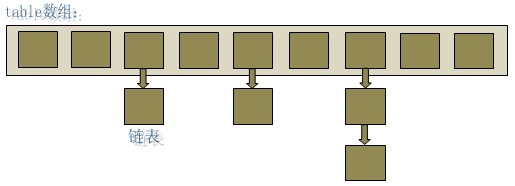
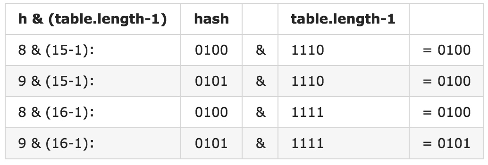

HashMap 概述
HashMap 是基于哈希表的 Map 接口的非同步实现。此实现提供所有可选的映射操作，并允许使用 null 值和 null 键。此类不保证映射的顺序，特别是它不保证该顺序恒久不变。
此实现假定哈希函数将元素适当地分布在各桶之间，可为基本操作（get 和 put）提供稳定的性能。迭代 collection 视图所需的时间与 HashMap 实例的“容量”（桶的数量）及其大小（键-值映射关系数）成比例。所以，如果迭代性能很重要，则不要将初始容量设置得太高或将加载因子设置得太低。也许大家开始对这段话有一点不太懂，不过不用担心，当你读完这篇文章后，就能深切理解这其中的含义了。
需要注意的是：Hashmap 不是同步的，如果多个线程同时访问一个 HashMap，而其中至少一个线程从结构上（指添加或者删除一个或多个映射关系的任何操作）修改了，则必须保持外部同步，以防止对映射进行意外的非同步访问。
HashMap 的数据结构
在 Java 编程语言中，最基本的结构就是两种，一个是数组，另外一个是指针（引用），HashMap 就是通过这两个数据结构进行实现。HashMap实际上是一个“链表散列”的数据结构，即数组和链表的结合体。

从上图中可以看出，HashMap 底层就是一个数组结构，数组中的每一项又是一个链表。当新建一个 HashMap 的时候，就会初始化一个数组。
我们通过 JDK 中的 HashMap 源码进行一些学习，首先看一下构造函数：
public HashMap(int initialCapacity, float loadFactor) {
if (initialCapacity < 0)
throw new IllegalArgumentException("Illegal initial capacity: " +
initialCapacity);
if (initialCapacity > MAXIMUM_CAPACITY)
initialCapacity = MAXIMUM_CAPACITY;
if (loadFactor <= 0 || Float.isNaN(loadFactor))
throw new IllegalArgumentException("Illegal load factor: " +
loadFactor);
// Find a power of 2 >= initialCapacity
int capacity = 1;
while (capacity < initialCapacity)
capacity <<= 1;
this.loadFactor = loadFactor;
threshold = (int)Math.min(capacity * loadFactor, MAXIMUM_CAPACITY + 1);
table = new Entry[capacity];
useAltHashing = sun.misc.VM.isBooted() &&
(capacity >= Holder.ALTERNATIVE_HASHING_THRESHOLD);
init();
}
我们着重看一下第 18 行代码table = new Entry[capacity];。这不就是 Java 中数组的创建方式吗？也就是说在构造函数中，其创建了一个 Entry 的数组，其大小为 capacity（目前我们还不需要太了解该变量含义），那么 Entry 又是什么结构呢？看一下源码：
static class Entry<K,V> implements Map.Entry<K,V> {
final K key;
V value;
Entry<K,V> next;
final int hash;
……
}
我们目前还是只着重核心的部分，Entry 是一个 static class，其中包含了 key 和 value，也就是键值对，另外还包含了一个 next 的 Entry 指针。我们可以总结出：Entry 就是数组中的元素，每个 Entry 其实就是一个 key-value 对，它持有一个指向下一个元素的引用，这就构成了链表。
HashMap 的核心方法解读
/**
* Associates the specified value with the specified key in this map.
* If the map previously contained a mapping for the key, the old
* value is replaced.
*
* @param key key with which the specified value is to be associated
* @param value value to be associated with the specified key
* @return the previous value associated with <tt>key</tt>, or
* <tt>null</tt> if there was no mapping for <tt>key</tt>.
* (A <tt>null</tt> return can also indicate that the map
* previously associated <tt>null</tt> with <tt>key</tt>.)
*/
public V put(K key, V value) {
//其允许存放null的key和null的value，当其key为null时，调用putForNullKey方法，放入到table[0]的这个位置
if (key == null)
return putForNullKey(value);
//通过调用hash方法对key进行哈希，得到哈希之后的数值。该方法实现可以通过看源码，其目的是为了尽可能的让键值对可以分不到不同的桶中
int hash = hash(key);
//根据上一步骤中求出的hash得到在数组中是索引i
int i = indexFor(hash, table.length);
//如果i处的Entry不为null，则通过其next指针不断遍历e元素的下一个元素。
for (Entry<K,V> e = table[i]; e != null; e = e.next) {
Object k;
if (e.hash == hash && ((k = e.key) == key || key.equals(k))) {
V oldValue = e.value;
e.value = value;
e.recordAccess(this);
return oldValue;
}
}
modCount++;
addEntry(hash, key, value, i);
return null;
}
我们看一下方法的标准注释：在注释中首先提到了，当我们 put 的时候，如果 key 存在了，那么新的 value 会代替旧的 value，并且如果 key 存在的情况下，该方法返回的是旧的 value，如果 key 不存在，那么返回 null。
从上面的源代码中可以看出：当我们往 HashMap 中 put 元素的时候，先根据 key 的 hashCode 重新计算 hash 值，根据 hash 值得到这个元素在数组中的位置（即下标），如果数组该位置上已经存放有其他元素了，那么在这个位置上的元素将以链表的形式存放，新加入的放在链头，最先加入的放在链尾。如果数组该位置上没有元素，就直接将该元素放到此数组中的该位置上。
addEntry(hash, key, value, i)方法根据计算出的 hash 值，将 key-value 对放在数组 table 的 i 索引处。addEntry 是 HashMap 提供的一个包访问权限的方法，代码如下：
/**
* Adds a new entry with the specified key, value and hash code to
* the specified bucket. It is the responsibility of this
* method to resize the table if appropriate.
*
* Subclass overrides this to alter the behavior of put method.
*/
void addEntry(int hash, K key, V value, int bucketIndex) {
if ((size >= threshold) && (null != table[bucketIndex])) {
resize(2 * table.length);
hash = (null != key) ? hash(key) : 0;
bucketIndex = indexFor(hash, table.length);
}
createEntry(hash, key, value, bucketIndex);
}
void createEntry(int hash, K key, V value, int bucketIndex) {
// 获取指定 bucketIndex 索引处的 Entry
Entry<K,V> e = table[bucketIndex];
// 将新创建的 Entry 放入 bucketIndex 索引处，并让新的 Entry 指向原来的 Entr
table[bucketIndex] = new Entry<>(hash, key, value, e);
size++;
}
当系统决定存储 HashMap 中的 key-value 对时，完全没有考虑 Entry 中的 value，仅仅只是根据 key 来计算并决定每个 Entry 的存储位置。我们完全可以把 Map 集合中的 value 当成 key 的附属，当系统决定了 key 的存储位置之后，value 随之保存在那里即可。
hash(int h)方法根据 key 的 hashCode 重新计算一次散列。此算法加入了高位计算，防止低位不变，高位变化时，造成的 hash 冲突。
final int hash(Object k) {
int h = 0;
if (useAltHashing) {
if (k instanceof String) {
return sun.misc.Hashing.stringHash32((String) k);
}
h = hashSeed;
}
//得到k的hashcode值
h ^= k.hashCode();
//进行计算
h ^= (h >>> 20) ^ (h >>> 12);
return h ^ (h >>> 7) ^ (h >>> 4);
}
我们可以看到在 HashMap 中要找到某个元素，需要根据 key 的 hash 值来求得对应数组中的位置。如何计算这个位置就是 hash 算法。前面说过 HashMap 的数据结构是数组和链表的结合，所以我们当然希望这个 HashMap 里面的 元素位置尽量的分布均匀些，尽量使得每个位置上的元素数量只有一个，那么当我们用 hash 算法求得这个位置的时候，马上就可以知道对应位置的元素就是我们要的，而不用再去遍历链表，这样就大大优化了查询的效率。
对于任意给定的对象，只要它的 hashCode() 返回值相同，那么程序调用 hash(int h) 方法所计算得到的 hash 码值总是相同的。我们首先想到的就是把 hash 值对数组长度取模运算，这样一来，元素的分布相对来说是比较均匀的。但是，“模”运算的消耗还是比较大的，在 HashMap 中是这样做的：调用 indexFor(int h, int length) 方法来计算该对象应该保存在 table 数组的哪个索引处。indexFor(int h, int length) 方法的代码如下：
/**
* Returns index for hash code h.
*/
static int indexFor(int h, int length) {
return h & (length-1);
}
这个方法非常巧妙，它通过 h & (table.length -1) 来得到该对象的保存位，而 HashMap 底层数组的长度总是 2 的 n 次方，这是 HashMap 在速度上的优化。在 HashMap 构造器中有如下代码：
// Find a power of 2 >= initialCapacity
int capacity = 1;
while (capacity < initialCapacity)
capacity <<= 1;
这段代码保证初始化时 HashMap 的容量总是 2 的 n 次方，即底层数组的长度总是为 2 的 n 次方。
当 length 总是 2 的 n 次方时，h& (length-1)运算等价于对 length 取模，也就是 h%length，但是 & 比 % 具有更高的效率。这看上去很简单，其实比较有玄机的，我们举个例子来说明：
假设数组长度分别为 15 和 16，优化后的 hash 码分别为 8 和 9，那么 & 运算后的结果如下：

从上面的例子中可以看出：当它们和 15-1（1110）“与”的时候，产生了相同的结果，也就是说它们会定位到数组中的同一个位置上去，这就产生了碰撞，8 和 9 会被放到数组中的同一个位置上形成链表，那么查询的时候就需要遍历这个链 表，得到8或者9，这样就降低了查询的效率。同时，我们也可以发现，当数组长度为 15 的时候，hash 值会与 15-1（1110）进行“与”，那么最后一位永远是 0，而 0001，0011，0101，1001，1011，0111，1101 这几个位置永远都不能存放元素了，空间浪费相当大，更糟的是这种情况中，数组可以使用的位置比数组长度小了很多，这意味着进一步增加了碰撞的几率，减慢了查询的效率！而当数组长度为16时，即为2的n次方时，2n-1 得到的二进制数的每个位上的值都为 1，这使得在低位上&时，得到的和原 hash 的低位相同，加之 hash(int h)方法对 key 的 hashCode 的进一步优化，加入了高位计算，就使得只有相同的 hash 值的两个值才会被放到数组中的同一个位置上形成链表。
所以说，当数组长度为 2 的 n 次幂的时候，不同的 key 算得得 index 相同的几率较小，那么数据在数组上分布就比较均匀，也就是说碰撞的几率小，相对的，查询的时候就不用遍历某个位置上的链表，这样查询效率也就较高了。
根据上面 put 方法的源代码可以看出，当程序试图将一个key-value对放入HashMap中时，程序首先根据该 key 的 hashCode() 返回值决定该 Entry 的存储位置：如果两个 Entry 的 key 的 hashCode() 返回值相同，那它们的存储位置相同。如果这两个 Entry 的 key 通过 equals 比较返回 true，新添加 Entry 的 value 将覆盖集合中原有 Entry 的 value，但key不会覆盖。如果这两个 Entry 的 key 通过 equals 比较返回 false，新添加的 Entry 将与集合中原有 Entry 形成 Entry 链，而且新添加的 Entry 位于 Entry 链的头部——具体说明继续看 addEntry() 方法的说明。
读取
/**
* Returns the value to which the specified key is mapped,
* or {@code null} if this map contains no mapping for the key.
*
* <p>More formally, if this map contains a mapping from a key
* {@code k} to a value {@code v} such that {@code (key==null ? k==null :
* key.equals(k))}, then this method returns {@code v}; otherwise
* it returns {@code null}. (There can be at most one such mapping.)
*
* <p>A return value of {@code null} does not <i>necessarily</i>
* indicate that the map contains no mapping for the key; it's also
* possible that the map explicitly maps the key to {@code null}.
* The {@link #containsKey containsKey} operation may be used to
* distinguish these two cases.
*
* @see #put(Object, Object)
*/
public V get(Object key) {
if (key == null)
return getForNullKey();
Entry<K,V> entry = getEntry(key);
return null == entry ? null : entry.getValue();
}
final Entry<K,V> getEntry(Object key) {
int hash = (key == null) ? 0 : hash(key);
for (Entry<K,V> e = table[indexFor(hash, table.length)];
e != null;
e = e.next) {
Object k;
if (e.hash == hash &&
((k = e.key) == key || (key != null && key.equals(k))))
return e;
}
return null;
}
有了上面存储时的 hash 算法作为基础，理解起来这段代码就很容易了。从上面的源代码中可以看出：从 HashMap 中 get 元素时，首先计算 key 的 hashCode，找到数组中对应位置的某一元素，然后通过 key 的 equals 方法在对应位置的链表中找到需要的元素。
归纳
简单地说，HashMap 在底层将 key-value 当成一个整体进行处理，这个整体就是一个 Entry 对象。HashMap 底层采用一个 Entry[] 数组来保存所有的 key-value 对，当需要存储一个 Entry 对象时，会根据 hash 算法来决定其在数组中的存储位置，在根据 equals 方法决定其在该数组位置上的链表中的存储位置；当需要取出一个Entry 时，也会根据 hash 算法找到其在数组中的存储位置，再根据 equals 方法从该位置上的链表中取出该Entry。
HashMap 的 resize（rehash）
当 HashMap 中的元素越来越多的时候，hash 冲突的几率也就越来越高，因为数组的长度是固定的。所以为了提高查询的效率，就要对 HashMap 的数组进行扩容，数组扩容这个操作也会出现在 ArrayList 中，这是一个常用的操作，而在 HashMap 数组扩容之后，最消耗性能的点就出现了：原数组中的数据必须重新计算其在新数组中的位置，并放进去，这就是 resize。
那么 HashMap 什么时候进行扩容呢？当 HashMap 中的元素个数超过数组大小 loadFactor时，就会进行数组扩容，loadFactor的默认值为 0.75，这是一个折中的取值。也就是说，默认情况下，数组大小为 16，那么当 HashMap 中元素个数超过 160.75=12 的时候，就把数组的大小扩展为 2*16=32，即扩大一倍，然后重新计算每个元素在数组中的位置，而这是一个非常消耗性能的操作，所以如果我们已经预知 HashMap 中元素的个数，那么预设元素的个数能够有效的提高 HashMap 的性能。
HashMap 的性能参数
HashMap 包含如下几个构造器：
HashMap()：构建一个初始容量为 16，负载因子为 0.75 的 HashMap。
ashMap(int initialCapacity)：构建一个初始容量为 initialCapacity，负载因子为 0.75 的 HashMap。
HashMap(int initialCapacity, float loadFactor)：以指定初始容量、指定的负载因子创建一个 HashMap。
HashMap 的基础构造器 HashMap(int initialCapacity, float loadFactor) 带有两个参数，它们是初始容量 initialCapacity 和负载因子 loadFactor。
负载因子 loadFactor 衡量的是一个散列表的空间的使用程度，负载因子越大表示散列表的装填程度越高，反之愈小。对于使用链表法的散列表来说，查找一个元素的平均时间是 O(1+a)，因此如果负载因子越大，对空间的利用更充分，然而后果是查找效率的降低；如果负载因子太小，那么散列表的数据将过于稀疏，对空间造成严重浪费。
HashMap 的实现中，通过 threshold 字段来判断 HashMap 的最大容量：
threshold = (int)(capacity * loadFactor);
结合负载因子的定义公式可知，threshold 就是在此 loadFactor 和 capacity 对应下允许的最大元素数目，超过这个数目就重新 resize，以降低实际的负载因子。默认的的负载因子 0.75 是对空间和时间效率的一个平衡选择。当容量超出此最大容量时， resize 后的 HashMap 容量是容量的两倍：